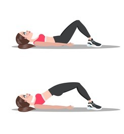
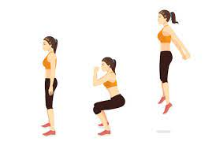

Booty Exercises
Glute Bridge
- Lie on your back, bent your knees and put your feet hip width apart. Put your arms at ypur sides with palms flat ont hte ground.
- Tighten your abdominal and gluteal muscles, press your feet into the floor and lift your hips off the floor. Your body should form a straight line from your shoulders to your knees.
- Hold it for around 5 seconds.
- Slowly lower the starting position and repeat it for around 20 times.
This exercises is good for beginners.
Jumping Squats
- Stand in a squat position. Make sure your feets are slightly wider than shoulder-width apart. Put your arms at your sides.
- Lower your body until your thighs are parallel to your knees. As you squat, move your arms out in front of you, palms together.
- Jump off the ground. Try to push your feet as high as possible. You can extend your arms.
- Squat back down and repeat it for around 20 times.
If you have problems with your knees or ankles, consult a physical therapist before trying jump squats!
